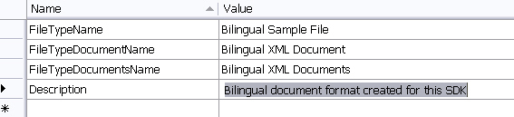

Adding the File Type Component Builder
Add the File Type Component Builder to your project by explicitly implementing the IFileTypeComponentBuilder interface.
public class SimpleTextFilterComponentBuilder : IFileTypeComponentBuilder
The component builder contains the complete implementation of the File Type Component Builder. It declares and defines the new file type plug-in to the framework, enabling it to work in Trados Studio.
Add File Type Information
Your File Type Component Builder requires information such as the file type plug-in version number and the file extension that the plug-in applies to. Trados Studio displays this information to users in the Options dialog box under File Types.
Add a resources file to your assembly and name it Resources.resx. Enter general information strings such as the file type version and description into this resources file. Reference these strings (and the embedded assembly icon) in the IFileTypeComponentBuilder implementation. The following image shows example strings for the resources file:

The IFileTypeComponentBuilder implementation references each component of your file type plug-in, such as file sniffers and file parsers. If you fail to reference a component in the file type definition, Trados Studio cannot use that component's functionality. The File Type Component Builder fully reflects your plug-in's component structure.
Divide your file type plug-in into distinct components, where each component performs a different task. You can also store runtime-configurable plug-in settings in the File Type Component Builder file.
The following example shows how to add the general file type information to the IFileTypeComponentBuilder implementation: